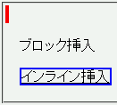

ins要素とdel要素は、子要素の状態によってブロックレベル要素にもインライン要素にもなりえるが、mozillaではdisplayプロパティで明示しない限りこれらの要素は常にインライン要素として扱われる。
<ins style="border:2px solid red;"><p>ブロック挿入</p></ins> <p><ins style="border:2px solid blue;">インライン挿入</ins></p>
ブロック挿入
インライン挿入
前者のins要素はブロック要素として、後者のins要素はインライン要素として扱われるはずです。
Netscape7.1標準モード
ins, del要素に対してdisplayプロパティを明示することでこの不具合を回避することができます。
<ins style="border:2px solid red; display:block;"><p>ブロック挿入</p></ins> <p><ins style="border:2px solid blue;">インライン挿入</ins></p>
ブロック挿入
インライン挿入